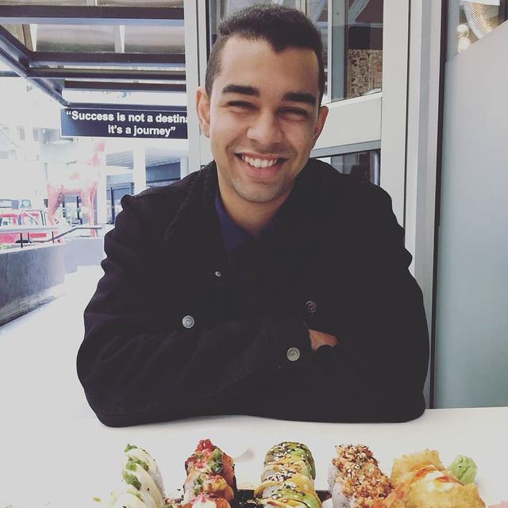

My name is Marshalino Jankowski, I was born and raised in Cape Town, South Africa and I am 24 years old. Some of the things I like to do when I have free time are playing games like Call of Duty, Assassins creed and Fifa. I'm a giant movie and series fanatic with some of my favourite movies being Watchmen, Fight Club and the Avengers Saga and my comfort series being How I met your mother, The Boys and Mindhunters. I enjoy taking my morning runs with playlists from G-Eazy, Skillet and Eminem, I love football and running, with Chelsea FC being my favourite team.

I have worked since the age of 16 for companies such as Woolworths, Merchants and Takealot. At Merchants as a customer service advisor, I was both the youngest and fastest growing employee moving from normal customer service to webchat and again to the social media team of Game & Dion wired. I have serviced customers both in South Africa and the UK, when I worked for Bes Utilities, one of the fastest growing utility companies based in the United Kingdom. Things were going good however I have always dreamed about having a career in the IT Field and once I heard about Life Choices I had to leap and take the opportunity with both hands. I dream of becoming an ethical hacker one day but I would also like to build on whatever field in the IT Field I can get my hands on.

I am trustworthy and loyal in everything I am passionate about, I have sound work ethics with advanced knowledge of computers and applications such as Microsoft word, excel and PowerPoint. I am self-motivated and have a presentable personality with great multi-tasking skills. I've developed business skills and communications that will cater to various companies